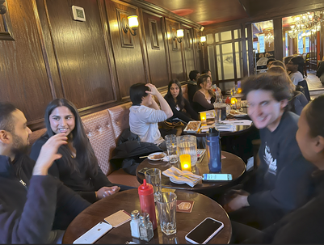
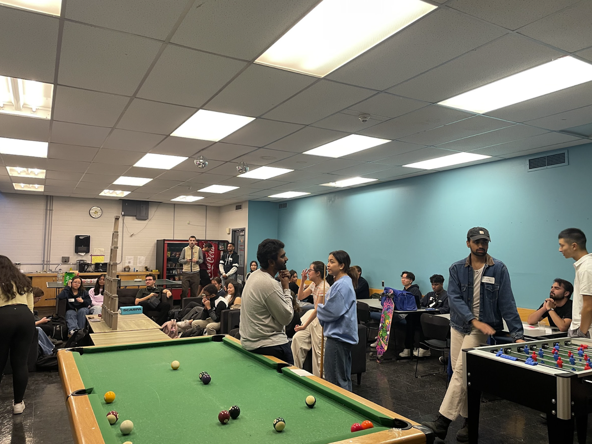

|
PEY-Student Mixer
The PEY Student Mixer is an event to allow students who may be considering PEY placements to network with upper year students who have returned from or are currently completing a 12-16 month PEY work term. Many students entering the PEY co-op program are nervous about opportunities and do not know what to expect from employers. This event allows students to hear first-hand experiences about internships in sectors. |
 |
|
Resume and Interview Drop-Ins
To supplement the University of Toronto Engineering Career Centre and our Chapter’s PEY Mentorship Program, we hold resume and interview workshops/drop-in sessions. These sessions are tailored based on student demand. Mentors help mentees polish their resumes, prepare for interviews, and succeed with their applications. |
 |
|
Professional Experience Mentorship Program
The ‘Professional Experience Mentorship Program’ is a year-long initiative to build meaningful relationships between undergraduate students who are interested in participating in the PEY program and those currently on PEY or have been in the past. The focus is to aid primarily second and third year students throughout the application process and ease the transition between academia and industry. |
|